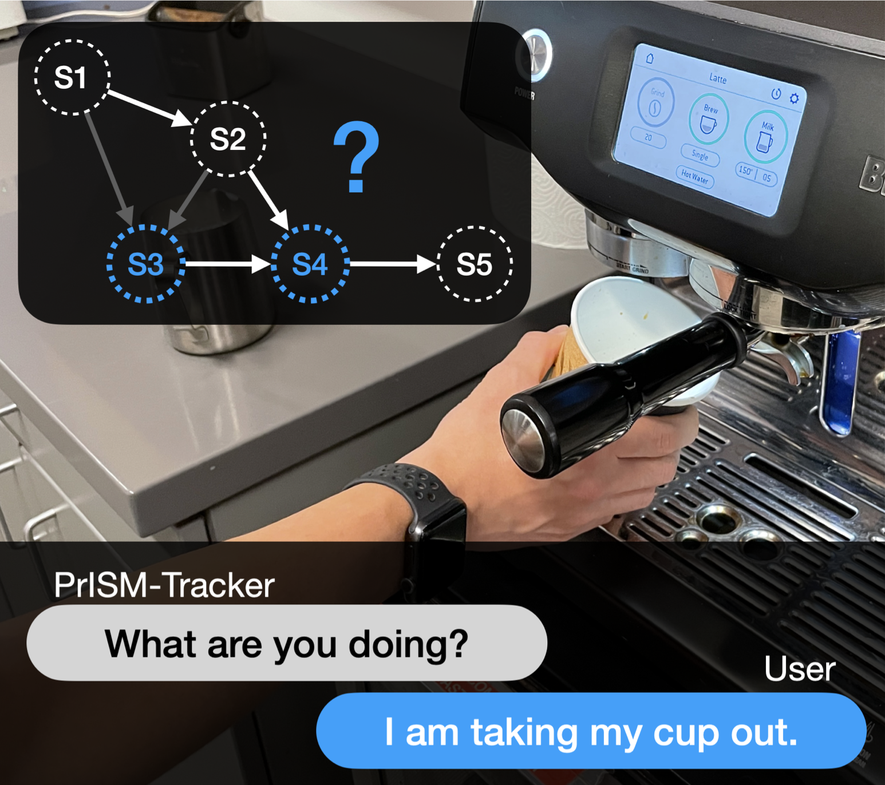
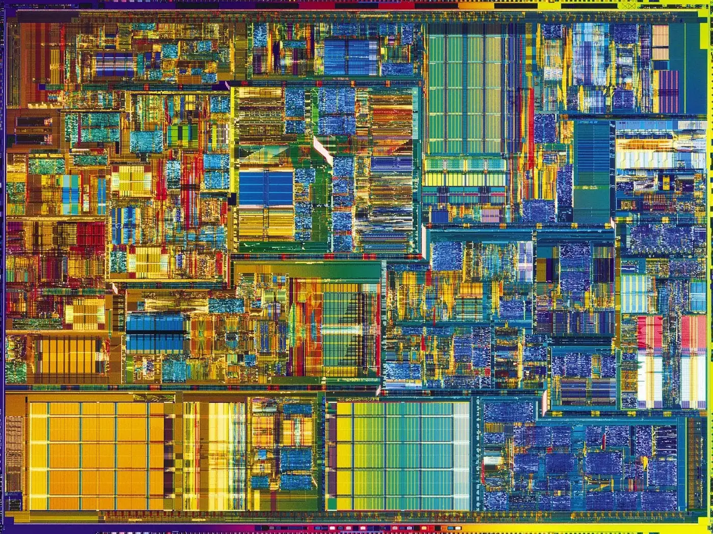
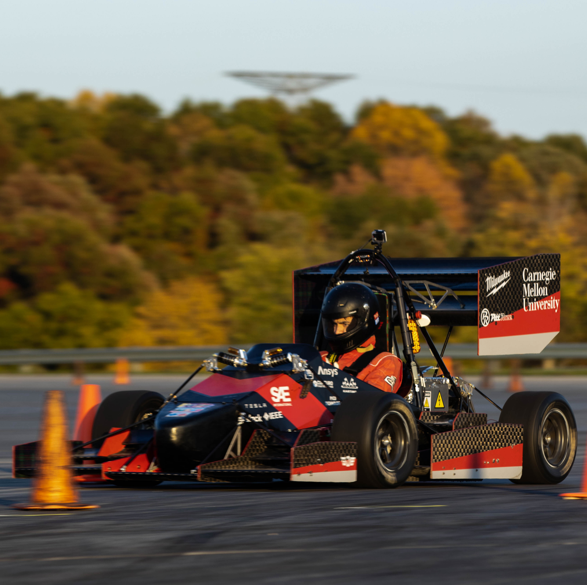
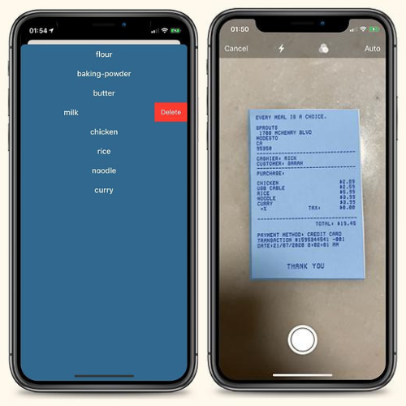
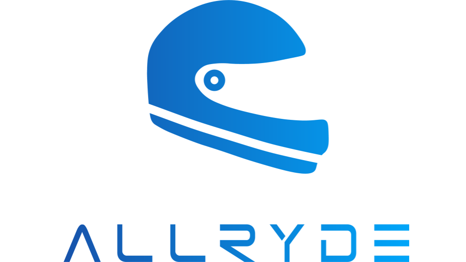

Personal Website
Dec 2022I built this personal portfolio website using HTML/CSS and JavaScript through self-guided learning with no prior experience.
Personal WebsiteI built this personal portfolio website using HTML/CSS and JavaScript through self-guided learning with no prior experience.
Personal WebsiteI programmed a Swift-based watchOS app that supports real-time audio and motion data collection and integrated Core ML activity classification models.
Github Repo Lab Website
I wrote a dynamic storage allocator for C programs that is correct, efficient, and fast for my computer systems class.
Sorry I can't provide Github repo because of academic integrity policy :<
I interned as a full-stack engineer at TalkMeUp, a Carnegie Mellon Unviersity startup that offers an AI-powered real-time analyzer aiding users in mastering communication.
TalkMeUp WebsiteI developed an automated driver data labeling script with a 98.6% of accuracy using Python, reducing manual work for the competitive analysis team and the race operations team.
CMR Website Github Repo
I published an iOS pathologist-approved speech therapy app for stuttering children that has reached over 300 downloads with 78% of users spending 1 hr+, and 213 reporting they stutter less.
Github RepoI coded an iOS mobile service that provides at-home cooks with customized recipes based on their grocery receipts with peers at University of Pennsylvania's Management & Technology Summer Institute.
Demo Video Demo Website Github Repo
I proposed a business plan that rewards Indian motorcyclists who wear helmets with premium insurance with peers at LaunchX High School Entrepreneurship Program, surveying over 200 motorcyclists and accumulating over 40 potential customers on the mailing list as the Head of Sales and Marketing.
Pitch Deck